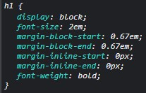

- Por isso quando marcamos um h1 o texto fica maior/negrito em relação a um texto marcado com um p.
h1- Curso de HTML.
p- Curso de HTML.

p- Curso de HTML.
Existem propriedades do CSS que são passadas do pai para o filho como uma herança (inherit).
-> mesmo com a cor definida no pai, não mudou a cor por ter sua cor padrão.
-> poderia usar apenas o seletor button {color: inherit;}e sua cor herdará do pai. Também poderia usar apenas o seletor buttom {color: seagreen;}
-> mesmo com a cor definida no pai, não mudou a cor por ter sua cor padrão.
Curso de Javascript-> poderia usar apenas o seletor a {color: seagreen;} ou a {color: inherit;} e sua cor herdará do pai.